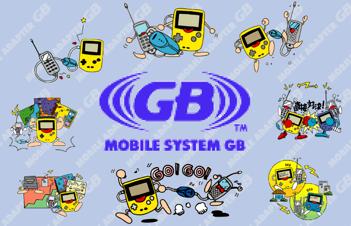
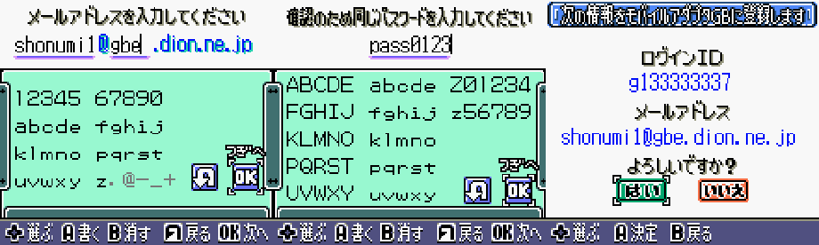
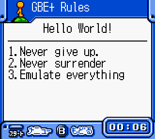
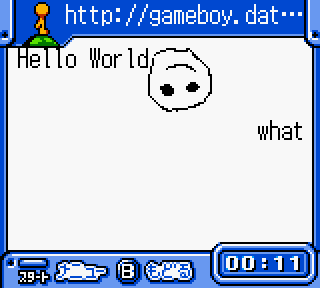
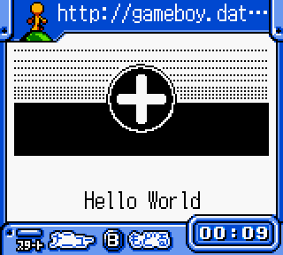
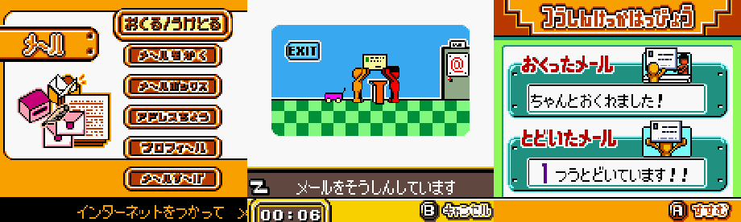
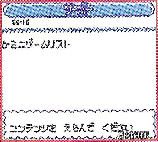
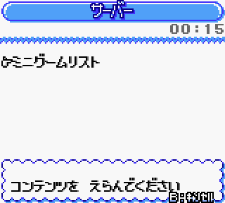
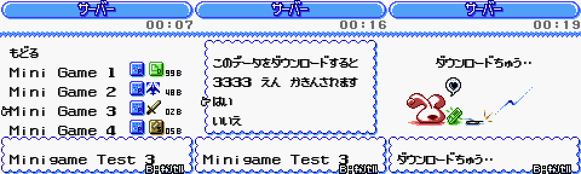

Answering the call
My pursuit to emulate more video game consoles, accessories, and other hardware is primarily solitary work. Rather than actively collaborate with others, I simply tackle a problem by myself from start to finish. Now, to be fair, I do frequent chatrooms, sub-reddits, and forums to offer any insight I've gained, and I publish nearly all of my research online in the form of Dan Docs and GBE+'s technical text files. However, for the most part, I'm a loner. In one real regard, this is to be expected in my particular line of work, since I tend to deal with "rare and exotic" gaming hardware. Few have direct access to the machines I'm looking at, and fewer still are interested or able to help. Nevertheless, every now and then, things line up accordingly, and the work becomes a team effort. The theme of cooperation goes along quite nicely with my latest target: internet connectivity through the Game Boy Color.
On January 27, 2001, Nintendo launched the Mobile Adapter GB, an accessory that allowed the Game Boy Color (and later the Game Boy Advance) to plug into the internet via cellphones. The Mobile Adapter would then contact game servers run by Nintendo, enabling such features as trading and battling Pokemon, participating in nation-wide golf tournaments, e-mail, web browsing, and of course, the dreaded paid DLC. This online service was exclusive to Japan due to several factors. At the turn of the century, Japanese cellphones were generally ahead of their western counterparts in terms of speed, coverage, and price (and depending on where you live, that's still the case). American and European mobile markets likely weren't suitable for the Mobile Adapter back then. Additionally, many phones during this period had proprietary data connectors. In Japan, Nintendo supported at least 3 types alone; rolling out the Mobile Adapter worldwide would have faced serious logistical issues. Furthermore, the Mobile Adapter was heavily aimed towards children, but few kids in Japan had access to cellphones, and those numbers were low outside the country as well. At any rate, the Mobile Adapter lived a short life with Nintendo closing its online functionality by December 14, 2002.
The Mobile Adapter was not Nintendo's first foray into the internet. From Famicom Modems, to the Stellaview, to the 64DD's Randnet, the company had made several attempts at online gaming. The introduction of the Mobile Adapter though, represented a more serious effort than what they'd previously attempted. When Nintendo throws a heavyweight like Pokemon Crystal as a sort of poster-child for an accessory, followed by a notable title like Mobile Golf (a sequel to Mario Golf on the GBC), that signals quite a bit of investment from the company. While these efforts ultimately didn't pan out, at the time they formed what I would describe as Nintendo's most extensive online service. Unfortunately, because the system was Japan-only and didn't even last two full years, much was lost, leaving us with only fragments and glimpses of this past. When video game enthusiasts and preservationists finally turned their attentions to the Mobile Adapter, the game servers had long since been silenced. It's almost like a prelude to the problems modern video game preservation faces today, with online-only games that disappear from all existence once the developers decide to kill them.
While the situation with the Mobile Adapter may seem especially grim, there remain plenty of ways to save old content and even recreate the overall experience with brand-new fan-made content. Around late 2016, I added support for the Mobile Adapter GB into GBE+. The entire device was emulated; the only things missing were the server responses. Some have mistakenly noted that GBE+ only has "partial" support for the Mobile Adapter, but that isn't accurate to say, since emulating a device that communicates with a server and emulating the server itself are two different things. Regardless, I experimented with emulating bits of some servers and made minor progress, but I stopped seriously working on that in early 2017 when I hit several roadblocks processing HTTP requests. However, recently in the past 4 months, I took renewed interest in the Mobile Adapter. After carefully examining what went wrong with HTTP requests, I finally made some decent headway. Around this time, I was invited to a Discord channel where like-minded folks were trying to bring the Mobile Adapter and its servers back from the dead. Suddenly I was part of a larger project dedicated to reviving something Nintendo had effectively discarded over a decade ago. As if that weren't exciting enough, several other researchers indirectly contributed crucial information, without which we wouldn't be as far along as we are presently.
The Mobile Adapter GB and associated servers are decidedly the most complex and time consuming things I've tackled so far in the Edge of Emulation articles. Figuring out how these servers are supposed to work is not in any way trivial, as I'll later demonstrate. For this reason, I've only managed to sufficiently reverse-engineer support for 2 servers out of the 22 GBC and GBA games that used the Mobile Adapter, and it's why this article is Part 1 of many. The task is monumental, but not impossible, and it's just the sort of challenge I love to throw at myself. Analyzing dozens of network packets, disassembling hundreds of CPU instructions, and resurrecting web services with nothing more than screenshots all sounds good to me. While Nintendo and others may have cast aside these games, they are in fact important pieces of digital history. No matter the odds they must be documented.
Mobile Trainer : Email and web-browsing
Prior to the summer of 2016, most of the finer, technical details concerning the Mobile Adapter were unknown until a clever fellow named Háčky showed up on the Glitch City Laboratories Forums. Thanks to one intrepid scholar, the inner workings of the Mobile Adapter were revealed, a sizable portion of Pokemon Crystal's Pokemon Mobile System GB came to light, and a basic, proof-of-concept server offered guidance for future study. It was Háčky's reverse-engineering that allowed me to emulate the Mobile Adapter hardware in the first place. I originally started emulating Mobile Adapter GB servers by working with something called the "Mobile Trainer". Each Mobile Adapter came with a catridge featuring utility software that helped users log into the Mobile System GB, Nintendo's online network behind everything. Here, they could access their email accounts as well as surf the web with a relatively simple browser. Rather than jump straight into Pokemon Crystal, I focused on Mobile Trainer, as it made for a great test case.
Mobile Trainer is the only official software that requires the Mobile Adapter (as it's used to configure and setup the device). Upon booting the cart, it checks for the presence of the adapter by pinging it with commands via serial input-output. In many ways, the Mobile Adapter is similar to the Game Boy Printer in its command-response flow, using packets, using magic bytes, and even including checksums. Whereas the Game Boy Printer actually barely communicated with the connected Game Boy, the Mobile Adapter on the other hand replies with lengthy, sometimes complicated data. Mobile Trainer covers a lot of these scenarios: checking the telephone line status, writing and reading configuration data to the adapter's tiny on-board memory, TCP transfers, DNS queries, and ISP logins.
The software tries to access any user info stored on the Mobile Adapter itself. The small entries occupy only 192 bytes total and contain items such as email addresses, DNS, POP3, and SMTP server addresses, and login IDs. This data is generated by the initial setup process, and if it's corrupted or missing, Mobile Trainer will go through the brief setup screens again. Emulating this part of the Mobile Adapter involves merely reading from or writing to an external file (much like handling SRAM game saves) and returning the specified bytes when the Game Boy asks. It's important to note that many games also read this data to see if the adapter has been run through Mobile Trainer, otherwise they fail to connect to the Mobile System GB and display error messages. After Mobile Trainer either verifies the adapter's configuration or creates a new one, users can then check their emails, browse the web, or view the extensive built-in help menu (complete with its own dictionary).

Mobile Trainer takes first-time users through a setup wizard of sorts. The above info gets stored on the device itself.
With most of the Mobile Adapter commands emulated (a number of which only respond with minimal amounts of data), getting to this point was just a matter of following Háčky's documentation. The mobile web browser and email client are by far the most interesting things Mobile Trainer has to offer, and almost immediately back in 2016 I started poking around there. Mobile Adapters can make TCP transfers over a variety of ports; they can also handle different protocols, HTTP sessions included, so long as the software is programmed appropiately. Mobile Trainer's web browser formerly allowed players to access news and updates published by Nintendo about supported games. The "Home Page" doubled as a portal, providing selectable links to other resources. As one might expect for an 8-bit handheld gaming device, the browser is minimalistic, using a barebones subset of HTML, monochrome images, and stripping out manual URL input.
As mentioned above, I had some difficulty getting HTTP requests for the Home Page to properly work with the browser. Mobile Trainer would accept them at first, only to try parsing them a second later and failing. Most curiously, I'd get an error message with a short 5-digit code that wasn't even specified in the manual. For the longest time I couldn't pinpoint the fault. I tried different HTTP headers to no avail, spent fruitless hours trying other responses, then gave up for more than a year. I had other goals to finish, and sometimes stepping away from a problem is the best way to solve it later. The solution happened to be obscenely easy. When closing the HTTP transfer, the Mobile Adapter expects to receive a packet with an "empty body", meaning no data. I took it to mean no text, as I figured the Mobile Adapter might freak out if the packet had a data length of zero. Turns out, it really does expect no data whatsoever, not even a single byte's worth. All I had to do was delete one tiny space in GBE+'s source code, and everything magically worked perfectly.
With HTTP requests solved, GBE+ could now reach the Mobile System GB's Home Page. Unfortunately for us, we have only remnants of what the Home Page was supposed to look like. Besides a few pictures from the Mobile Trainer manual and few others from Nintendo's online Japanese magazine, not much was documented. The Mobile Adapter pings the URL http://gameboy.datacenter.ne.jp/01/CGB-B9AJ/index.html, but the exact content that once existed there has been erased from history; the link hasn't been valid for well over 15 years. Even so, there is great value in learning the full extent of the web-browser's capabilities. Though the emulated Mobile Adapter requested index.html from Nintendo's dead servers, it's actually none the wiser if GBE+ responds with its own data. Supplying Mobile Trainer with an internal HTML document gets the web-browser to render things as if it had actually downloaded them from the internet.
Using my customized version of index.html, I started testing what the web-browser could do. Evidently, it uses a very cut-down version of HTML. Staples such as links, lists (both ordered and unordered), line breaks, centering, and titles work. Images were also thrown into mix (more about that later), but aside from all that, not much else functions. These days, such restricted options wouldn't just be minimalist, it would barely pass as usable. Mobile web design, however, was a very different beast back in the early 2000s. Small data sizes were emphasized to deal with low network speeds (and limit the costs of transfers) as well as to reduce the client-side processing once received. In that regard, Mobile Trainer's web-browser is very much on-par with the sorts of mini-browsers typically found on cellphones during that same period.

A brief demo of the what the Mobile Trainer Browser could typically achieve.
Connecting with friends
As I touched upon earlier, after making this much progress on my own, a group of dedicated people approached me. They too wanted to see the Mobile Adapter emulated and brought back to life. I joined their Discord channel during one of my lunch breaks, and ever since we've been figuring out how things worked and how we can preserve whatever we can. Some have scraped useful text strings hidden in the game ROMs, others have uploaded scanned documents, some have made emulated servers in Python and PHP, and others are even working on hardware devices that might one day act as modified substitutes for the Mobile Adapter. Together we are the Gameboy Online Restoration Project. By the time I came onboard, the Gameboy Online Restoration Project had also dived into the Mobile Trainer's web-browser, but like me, they were stuck on how it processed images.
Many theories and suggestions were made about the possible format. I wanted to help out the Gameboy Online Restoration Project right away, so I took a close look at the code that handled images. Like most every other browser, the one in Mobile Trainer sends out an HTTP GET request when it encounters an <img> tag, to pull the image file from wherever. Tracing this request, I watched what Mobile Trainer did as it processed the individual bytes of an image file. Right away, I noticed that it checked whether or not the first byte of the file is a value of 0x42, and whether or not the second byte is 0x4D. Those two bytes in ASCII are "BM"; these are the "magic bytes" that identify a BMP file. Debugging the code further confirmed that Mobile Trainer goes on to parse other parts of a BMP file. Interestingly enough, Mobile Trainer places a lot of conditions on what it deems to be a valid BMP file, especially in regards to size and color. Images must be 144x96 at a maximum and must be 1bpp (black and white). As it turns out, most image editors will produce BMPs that Mobile Trainer can use as-is. After a few more tests, that particular mystery was put to rest.
 
Left: The first successful emulation of Mobile Trainer's <img> tag. Right: Default index.html that now comes with GBE+.
Having conquered the web-browser, I turned to the email client. It was actually relatively straightforward and no-frills. Mobile Trainer connects to a POP and SMTP server on ports 110 and 25 respectively. All of the commands were standard. GBE+ only had to parse the commands and return one or two lines of text as a response, and presto, email was emulated. GBE+ could then successfully send and receive internal test messages. Unfortunately, a bug unrelated to Mobile Adapter emulation currently prevents GBE+ from opening the received emails. Anyway, going further would involve having GBE+ connect to a real web-server, which would be a neat idea in the future. Such an extension of Mobile Adapter emulation is something I would love to pursue eventually.

Digital postal service in action.
Net de Get: Mobile Minigame Mania
Mobile Trainer is just the start of the Mobile Adapter's supported software. At least 5 other GBC titles and a dozen-plus GBA titles used the accessory. Each game needs to be studied and reverse-engineered to learn exactly how the original server handled itself along with what kind of data it transferred. I had to carefully decide which one to examine next, given how time consuming the process could be. Last year, when I wrote about the DMG-07, I also mentioned a (rather cryptic) list of things I wanted to emulate in 2018. I'd researched every item except for those "downloadable GBC games". When I say I plan to investigate these things, I don't speak idly. I deliver results.
The game in question is called Net de Get: Minigame @ 100. It was made by Mobile21, a developer formed as a joint venture between Nintendo and Konami and specifically catered to the Mobile Adapter. Mobile21 alone was responsible for the development of 6 games (or about 27 percent) of all the known games that supported the adapter. Net de Get revolves around playing minigames to earn points in certain categories. Once enough points are earned, players could download other minigames from the Mobile System GB network. In addition to being one of the few GBC games to support the Mobile Adapter, Net de Get is the only game to make use of the MBC6 cartridge. This cart used flash ROM to save the downloaded games instead of putting them in battery-backed SRAM. My goal here was to get Net de Get working in GBE+ and to reasonably emulate the process of downloading minigames. The problems here were twofold. First, MBC6 emulation documentation was incomplete, largely missing details about flash ROM. Second, everything related to Net de Get's servers were total unknowns. No other GBC emulator natively supports the Mobile Adapter besides GBE+, so no one really knew what to expect from Net de Get.
For quite a while, I don't believe there was ever any good resource regarding how the MBC6 worked besides source code in emulators like higan. Thankfully, earlier this year, endrift (the author of mGBA), wrote some very helpful notes after doing a bit of testing on the hardware. Although endrift did not fully probe how flash ROM worked, the documentation concerning basic ROM and RAM banking ultimately served as a launching point for my efforts. To say the least, I probably wouldn't be writing this portion of this article without endrift's initial findings. Teamwork makes the dream work, even indirectly. Using those notes, GBE+ could boot and run Net de Get. After fooling around with some of the minigames, I unlocked a "Server" option in the main menu. This led to a password entry screen and later an attempt to download a file called h0000.cgb. Unlike Mobile Trainer, Net de Get used binary files with no standard formats. Every file downloaded is basically whatever data the developers wanted in a structure that was most convenient for them. I had to stick my hands into not only hundreds of debug logs, but rows of disassembled code as well. I had to use every trick I knew to figure out what was going on.
For a while, I tried throwing random data back at the Mobile Adapter when it asked for h0000.cgb, but that brought me nowhere. Once again, I traced the code and examined what it did when it started parsing the data it had received. Much to my surprise, h0000.cgb needed "magic bytes" just like BMPs in Mobile Trainer's browser. The first four bytes must be "MNGL" in ASCII, otherwise Net de Get rejects it. MNGL is probably short for Minigame List. In the game manual, there is a screenshot of what h0000.cgb should do once downloaded; it simply displays the text "ミニゲームリスト", which translates to... well, minigame list. With the magic bytes in place, Net de Get accepted my data and started printing characters I had put in it. I soon learned that the file uses offset to point to a string, however, I could only ever get one string to print. The manual seems to indicate that only one option ever existed, and no other hardcoded URLs appear to exist in the game's ROM (besides the one I'll talk about next), so it's doubtful h0000.cgb was meant to lead to other sorts of download menus. Nonetheless, selecting the minigame list option triggers another HTTP GET request for something called RomList.cgb
 
The image on the left is from the manual, while the right is GBE+. Note the minor differences (timer and text). The manual likely had a screen of some pre-production version of Net de Get.
This file took far longer to pick apart due to its complexity and the sheer number of features it uses. Again, I threw random data at RomsList.cgb, only making minimal progress. Apparently, I was supposed to get a list of available minigames to download. I could get some menu items to appear with a couple of icons, but they had no text and could not be selected. Eventually I followed the code back to where it started parsing my data. As I stepped through more code, I discovered that RomsList.cgb used offsets to point to a data structure elsewhere within the file. I quickly put random data at where this data structure should have been, and suddenly I was getting menus with garbled text and a few changes to some of the icons. With that much done, I used trial and error to narrow down the function of each of the bytes. The data structure did quite a lot; it displayed the minigame name, the minigame type, the points necessary to access the download, a brief description of the minigame for a small textbox, and it also determines the price of the minigame in yen, as well as giving the minigame a unique ID. RomsList.cgb proved quite troublesome to dissect at first; a few incorrect or misplaced bytes would cause the menu to freeze, crash, or glitch. Once everything had been sorted, GBE+ could select a specific minigame from the list and start downloading.
Minigame downloads were the hardest part of restoring Net de Get's online functionality. The first hurdle had an absolutely trivial solution, but for the longest time I couldn't understand the underlying problem. Downloads would start in GBE+, the emulated Mobile Adapter would pull the data I had chosen, and the process would just hang indefinitely. The game kept running and the music kept playing, yet it just acted as if the download never stopped. While doing some debugging, I had GBE+ spit out a ton of logs to my command-line in real-time. This caused GBE+ to slow down to about 1/4 speed, and it enabled me to input button presses as soon as the screen changed. While probing the download issue in this slow-motion mode, I jumped to a minigame right away and started the download. This time, Net de Get finished it. Going over the logs again, I noticed something different between this successful download and the others that failed.
Many Mobile Adapter games frequently send out a command that checks the status of the telephone line about once a second. This acts as a "keep-alive" signal for the software. The line should indicate a "busy" status if the connection is still active. According to Háčky, this command expects two values for the busy status, 0x04 or 0x05. Both represent a busy state for the line, but their differences remain unknown. As I poked through more Net de Get code, I saw that it would continually loop over and over again if this line-busy command returned 0x05. Changing it to 0x04 made it run normally. In my slow-motion debugging, I managed to trigger the download way before the line-busy command was even sent, bypassing the issue entirely. Currently, I do not know what separates the return values of 0x04 and 0x05, but using 0x04 seems okay with other Mobile Adapter games.

Every went fine until the very last screen on the right. A single incorrect return value freezes the entire download.
So, at this point, GBE+ can convince Net de Get to request a couple of menus, select a minigame to download, and initiate and complete said download. Once all that is settled, Net de Get displays a screen asking where to store the downloaded minigame. Net de Get offers several boxes for this purpose. Choosing any one begins the final process: writing to flash ROM. This was completely uncharted territory, however, I've done stuff like this before. Somehow, I always manage find a way to get the job done. I'm not totally unfamiliar with emulating flash ROM; a number of GBA games use it for their game saves, so I already knew how a lot of the flash commands were supposed to operate. Slowly, I managed to get GBE+ to recognize these commands; after implementing them, Net de Get tried writing data to the emulated flash ROM. At first, I couldn't figure out how the flash memory was banked, so I merely set all reads and writes to the same bank to simplify the debug and testing phase.
It would have been nice if Net de Get simply downloaded the minigame binary and copy+pasted it as-is to flash memory. Unfortunately, saving downloads would not be that easy; the game seemed to do all sorts of processing on the downloaded data. I changed a few bytes in a hex editor here and there to observe the effects, but nothing seemed to cause any noticeable reaction from the game. Net de Get would simply say the saving process had completed without actually writing any data to flash. I started probing a few bits of code in the ROM through GBE+, but it quickly became evident that I would need to go all the way in. I had to understand how most of the relevant code actually worked, and that meant disassembling a portion of the ROM. Disassembly is the process of turning raw machine code back into assembly (or sometimes a higher-level language) and preferably organizing it in some coherent manner. If done right, it can be used to see the underlying mechanics of a program, acting as a low-level replacement for the actual source code. It's a laborious and often dull task with a fair amount of steps that require manually handling things, such as determining what's a loop, what's a variable, and the purpose of each section of code. Disassembly, quite frankly, sounds insane. It's looking at individual CPU instructions (which are generally nothing more than math operations or memory copy operations) and trying to recreate the blueprint for some software. However, sometimes it's necessary in order to comprehend otherwise inscrutable programs.
Disassembly always starts off slow, as there is generally little information about how the code was originally designed. As more pieces gather together, a better picture emerges. It was only after a couple of days of repeatedly tackling this task that I started to grasp what Net de Get was doing. Apparently the minigame came in a sort of download "wrapper" format. Understanding this format was key to making sure the game wrote any data to flash memory at all. As far as I could tell, only about 8 bytes made up a sort of header at the beginning of the wrapper, and about only 4 bytes actually mattered. The first two values determined whether the wrapper was valid and how it should write data to flash. The last two relevant values were the total size of the minigame itself. Finally, whenever I tried saving the downloaded minigame to a box, Net de Get would start writing data to flash! Much to my dismay though, another problem appeared. Only a tiny amount of the minigame was written to flash before an error message came on-screen. Net de Get, interestingly enough, verifies every single byte it writes to flash, which causes poor flash emulation to freeze or fail.
This verification phase puzzled me for a while, as I thought all my logs showed nothing amiss during the write phase. Net de Get writes 128 bytes to flash at a time, then it tries to read each byte again, comparing it to a copy in RAM. As I took a closer look at my logs, I noticed that Net de Get strangely writes to the 128th byte twice; one is the proper value for the minigame, and the other is just zero. I gathered that the zero-write was meant to signify something command-related, so I made sure that zero didn't actually write to flash. This zero-write was prompty followed by writing a value of 0xF0, which I interpreted as termination of the previous flash write command. If things weren't complicated enough the flash write command and the flash sector erase command both use the value 0xF0 for termination, but reading from the flash chip is supposed to return different results depending on which was recently terminated. The verification stage failed here too because GBE+ couldn't handle each context separately at first. Once all of these issues were finally resolved, Net de Get would properly save the whole minigame to flash! Well, almost...
The last challenge here looked to be SRAM corruption; the game save would mess up sometimes after flash was written. This also had the effect of making the downloaded minigame totally inaccessible from the main menu. After some digging around, I found that if the minigame wrapper specified a size of 0x1FF bytes or less, everything would work as intended. Anything greater or equal to 0x200 bytes resulted in bad SRAM. Immediately, I began searching where these errant bytes were coming from. SRAM initially held the correct values, but later on that was overwritten with data from the downloaded minigame. Exactly 0x100 bytes were taken from the minigame and placed later copied into SRAM. Sure enough, when using large minigame downloads (around 2KB) I noticed not all of the data actually copied to flash. At various intervals, 0x100 bytes were effectively "missing". Putting these two clues together, I eventually saw that Net de Get actually copied 0x200 bytes from the minigame into flash, and afterwards the next 0x100 bytes (acting as a sort of "footer") got copied into SRAM. These events looped until the entire mingame was processed. SRAM became corrupted because the minigame wrote unexpected bytes there.
Now I knew how SRAM went bad, but to avoid it, I also had to know what values were correct for the footer. When the minigame size is 0x1 to 0x1FF bytes, the data is too short to start overwriting SRAM, thus producing valid save files. I simply made Net de Get download a tiny minigame, then I looked at the valid values from the game save, which were then copy+pasted into each footer section of the minigame. Just like that, even large minigame downloads completed without issue. I hit one last little snag though. I dont't exactly know what the footer data should really look like, so copying data from the save files isn't perfect in every regard. If the minigame is 0x200 bytes or bigger (I dont't even know how you make something smaller and call it a game), my method generally allows for only 1 minigame to be downloaded at a time thanks to the way Net de Get formats its saves. There's definitely a missing piece to the puzzle, but I'm content to leave that for another day. All of this work took me some 3 months to finish, although this article may not give that impression. I spent a lot of time and energy on Net de Get, so for now I'm relaxing and enjoying the progress I've managed to make. The majority of the downloads and servers is understood, enough to get very functional emulation of both. My main concern was documenting Net de Get's online capabilities so that we could glimpse into a forgotten era of the Game Boy Color's history. I believe I fulfilled this goal. Though we may never know what sorts of minigames Mobile21 might have developed, we can still make our own. The minigame format for downloads is the same as the minigames stored in the ROM, so it's possible to use existing games as templates for customized ones.
All that hard work finally paid off! While far from perfect, Net de Get's downloads are finally emulated in a reasonable capacity.
Logging in to 2019
Well, another year is closing, and what a wild ride 2018 was for the Edge of Emulation series. Jumping into the GBC's infrared sensor, the Pocket Sonar, and the Mobile Adapter were all big items on my list. I have no plans of stopping, however. There are plenty of video games that need to be explored from the inside out. I'll be turning 30 years old soon, and looking back on the past two years has been quite rewarding. I think I'm fortunate to feel as if I've accomplished something at a point where I could easily be questioning what I want to do with the rest of my life. I actually never expected video game preservation to be a calling of mine (I always wanted to be a game dev, or at least write stories for games), but it's now officially an important part of who I am. I'll do my best from here on out to make sure we faithfully record the past and present for future generations.
So what's next on my schedule? What's the next year going to look like? Obviously, I'm not done with the Mobile Adapter. It's going to take a long time to fully emulate all the servers. On that front, however, expect to see something involving strategic warfare and Hello Kitty (no, not necessarily together silly). Beyond that, I'm going to finally peer into one of the bizarre proto-Skylanders-esque accessories on the GBA and add support for an exotic, Tamagotchi-related Game Boy cart. Last but not least, I've got something special planned that's amazingly not connected to the Game Boy, or GBE+ for that matter. I do like to keep a good secret or two, but I will say this: don't be surprised if you see my name popping up in another emulator soon.